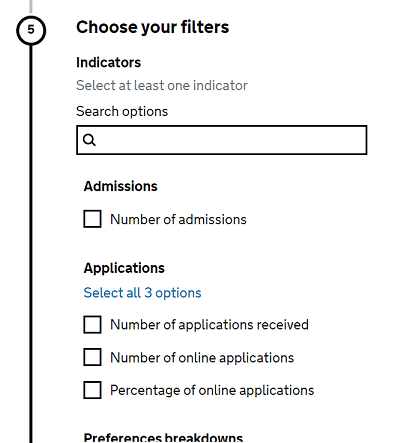

Guidance on how to structure data files.
These standards provide general principles of best practice that can be applied to any data that is produced. The aim is to apply a consistent, logical, structure to all data files so that they are easier to use and analyse, intended to minimise the time spent cleaning the data. Adopting these principles will give us more power to serve the needs of the users, saving both us and them time when producing and using the data. This will also open up further opportunities for linking data, including connecting to cross government data initiatives such as the GSS data project.
“Tidy datasets are all alike but every messy dataset is messy in its own way.” – Hadley Wickham
This guide aims to help statistical production teams understand and meet the standards required. This includes:
If you have any questions, or would like any further advice on what you read here, contact the Statistics Development Team.
When publishing statistics, you should be following these standards for underlying data files.
For publishing on EES specifically, please note the following points:
In light of recent acessibility legislation, you should aim to include at least 3 years of data in EES where it exists.
These standards give you the power to format the data in way that best meets the needs of the users. There are only a handful of formatting standards to follow to ensure best practice and consistency across all of our data.
Data files must in comma separated values (.csv) format. Variable names must be in the first row of your file as the header row, and be in snake_case. If you need to use commas within a cell, then you must add a text delimiter such as quotes to your file to define each cell (this is often done automatically for you).
The move to the new platform provided the ideal opportunity to standardise our production of underlying data to give the users the consistency that they ask for. Our standards draw upon the ideas of tidy data, essentially this means applying a logical structure to datasets so that they are easier for use and analyse, minimising the time spent cleaning the data before use. Here is a quick summary of what tidy data is, and further details on tidy data, and where the ideas came from can be found by reading Hadley Wickham’s paper on Tidy Data. The key principles to remember are:
The variables (columns) in each of the uploaded data files will fall in to the following three categories. The standards for each category are discussed in detail later on this page.
Explore Education Statistics is designed to give production teams the freedom of controlling what data users can access, and how they access it. It is expected that most releases on the platform will have multiple data files, and teams have control over how they break these files up.
The first key consideration is that the table tool will only create tables from a single a data file, and cannot use multiple files as sources. Therefore any data that you want to compare within a single table must in the same data file. The table tool itself is there to allow users to narrow down the amount of data they have to absorb and to be able to efficiently take away key statistics.
A useful way to judge how to break up data files is to consider whether all of the data in the file is appropriate to show side-by-side in the same table. If there are data that are conceptually different or may be confusing to compare side by side, then these should be in separate data files. Any data file uploaded to EES is usable by all users in the table tool, and users will be able to download the exact same files as you upload
There are no character or size limits in a csv file, but you should consider the restrictions the users will face when downloading and processing the data (excel has a cell character limit of 32,760 for example). There is no size limit for EES, we are still testing the service with large files. Ideally we want to develop the platform to work with the largest files we can produce. Do remember though that the larger a file is, the longer it will take to upload and process. Also remember that the files you upload are the files that users will download, consider the software they may access to (e.g. Excel) and whether the size of your files are compatible with this.
Excel has a row limit of 1,048,576. In general it is best to avoid exceeding this some end users may struggle to open the file. One good way to cut the file down is to split after a certain number of years, or to separate out different geographic levels into separate files. With the data all being in a tidy format they are easy enough for secondary analysts to stitch back together if needed.
People can tend to obsess over file size, however this is not everything, and the balance of rows and columns can have a large impact on performance even for files of the same size. We don’t yet know the full extent of this, and with that caveat, the very rough guide based on size would be:
We generally recommend fewer large files over a larger number of smaller files. If you think you are having issues with file size please tell us so that we can investigate and work towards a solution with you. The platform is always in development, and we do not want teams to arbitrarily make decisions about their data (and potentially waste a lot of time) due to something that could be addressed if we are told about it.
Every observation, or row, in all of the provided data files will have a set of observational units based on the time period and geographic level that the data relates to. The number of these columns will differ across files depending on the number of geographic levels included in the publication.
Across every single dataset of official statistics produced by DfE, the following column names MUST be present at a minimum (example cell values):
| time_period | time_identifier | geographic_level | country_code | country_name |
|---|---|---|---|---|
| 201819 | Academic year | National | E92000001 | England |
We use the two columns, time_period and time_identifier, to generalise time across our underlying datasets. This is a important for general useability of our data, as well as being critical in driving the charts and tables in the Explore Education Statistics platform and making explicit reference to the time in which our measurements relate to. This is a compulsory element of any official statistics dataset.
If you think that your data can’t follow this format, please contact explore.statistics@education.gov.uk with details so that we can discuss this.
Producers should not mix different types of years in the same dataset. This is to prevent any chance of confusion for users selecting time periods with similar labels in the table tool. For example, you cannot have Academic year and Calendar year data in the same data file. You also cannot mix yearly breakdowns (e.g. full year, quarters, months, or terms) in the time identifier column. Instead, where it makes sense to mix these within a data file you should use a filter column as shown below. Note the use of ‘Total’, this is a part of the standards for filters.
| time_period | time_identifier | quarter |
|---|---|---|
| 201718 | Academic year | Total |
| 201718 | Academic year | Q1 |
| 201718 | Academic year | Q1-2 |
| time_period | time_identifier | month |
|---|---|---|
| 2017 | Calendar year | Total |
| 2017 | Calendar year | July |
If your row of data spans multiple years (e.g. is a cumulative sum between 2010 and 2018), the starting year should be made clear in the name of the indicator, with the year of the end of the time period listed as the time identifier. For example if you had been recording the number of enrolments in a Local authority since from the start of the 2010/11 Academic year to the end of the 2017/18 Academic year, your data would look like the example on the right.
| time_period | time_identifier | starts_since_201011 |
|---|---|---|
| 201718 | Academic year | 190 |
| 201617 | Academic year | 173 |
All time_period values should be numeric only, below the number of digits (either 4 or 6) is defined per time_identifier below. Do not include dashes or slashes in six digit years.
You can only mix time_identifiers if they appear within the same table below. If they are in separate tables then they should not be mixed.
| Acceptable time_identifier value | Corresponding time_period |
|---|---|
| Calendar year | 4 digits |
| Acceptable time_identifier value | Corresponding time_period |
|---|---|
| Reporting year | 4 digits |
| Acceptable time_identifier value | Corresponding time_period |
|---|---|
| Academic year | 6 digits |
| acceptable time_identifier value | Corresponding time_period |
|---|---|
| Financial year | 6 digits |
| Acceptable time_identifier value | Corresponding time_period |
|---|---|
| Tax year | 6 digits |
| Acceptable time_identifier value | Corresponding time_period |
|---|---|
| Autumn term | 6 digits |
| Spring term | 6 digits |
| Summer term | 6 digits |
| Autumn and spring term | 6 digits |
| Acceptable time_identifier value | Corresponding time_period |
|---|---|
| January | 4 digits |
| February | 4 digits |
| March | 4 digits |
| April | 4 digits |
| May | 4 digits |
| June | 4 digits |
| July | 4 digits |
| August | 4 digits |
| September | 4 digits |
| October | 4 digits |
| November | 4 digits |
| December | 4 digits |
| Acceptable time_identifier value | Corresponding time_period |
|---|---|
| Calendar year Q1 | 4 digits |
| Calendar year Q2 | 4 digits |
| Calendar year Q3 | 4 digits |
| Calendar year Q4 | 4 digits |
| Acceptable time_identifier value | Corresponding time_period |
|---|---|
| Academic year Q1 | 6 digits |
| Academic year Q2 | 6 digits |
| Academic year Q3 | 6 digits |
| Academic year Q4 | 6 digits |
| Acceptable time_identifier value | Corresponding time_period |
|---|---|
| Financial year Q1 | 6 digits |
| Financial year Q2 | 6 digits |
| Financial year Q3 | 6 digits |
| Financial year Q4 | 6 digits |
| Acceptable time_identifier value | Corresponding time_period |
|---|---|
| Tax year Q1 | 6 digits |
| Tax year Q2 | 6 digits |
| Tax year Q3 | 6 digits |
| Tax year Q4 | 6 digits |
We publish at a number of different geography breakdowns and these vary from publication to publication. Every publication in the new platform must include the three compulsory columns - geographic_level, country_code and country_name in its data files. These are compulsory as the data we are producing must lie within a country boundary.
Teams should make sure that they are regularly checking their geography codes if they are not using a lookup from a maintained database (such as in the PDR). ONS have the Open Geography portal, which can be a useful way of checking these. There is a wealth of data on there, though Local authority boundaries can be hard to find, they can be found using the tabs at the top – Boundaries > Administrative Boundaries > Counties and Unitary Authorities.
When using geographies that can be measured in multiple ways, you can achieve this by including a filter such as level_methodology which states how you have measured the geographic level. For example, at Local authority level you may have data that was measured by the residence of the pupil and the location of the school:
| geographic_level | old_la_code | la_name | new_la_code | level_methodology | headcount |
|---|---|---|---|---|---|
| Local authority | 373 | Sheffield | E08000019 | Pupil residence | 689 |
| Local authority | 373 | Sheffield | E08000019 | School location | 567 |
All rows must have country_code and country_name completed, regardless of geographic level. The additional required columns by level are shown below. You do not have to publish at every level, this is a guide that covers every level that can be published in the platform. Teams may use additional columns as relevant such as including Regional columns for Local authority level data, this is optional.
Planning area, School, Provider, and Institution level data will upload as normal but not be read into the table tool by the platform, as it is not yet designed for these levels of data.
Please do not force these levels into the platform through using filters as that breaks the consistency that we are trying to set for the benefit of users. The data will still be accessible in the downloadable files for users to explore.
| geographic_level | required columns | notes |
|---|---|---|
| National | No additional columns | |
| Regional | region_code, region_name | |
| Local authority | old_la_code, new_la_code, la_name | It is usually good practice to include the Regional aggregations where possible given the direct link between Local authorities and Regions. |
| RSC region | rcs_region_lead_name | For RSC region data, we generally define them into lead RSC regions where the majority of the data is from. |
| Parliamentary constituency | pcon_code, pcon_name | |
| Local authority district | lad_code, lad_name | |
| Local enterprise partnership | local_enterprise_partnership_code, local_enterprise_partnership_name | |
| Mayoral combined authority | mayoral_combined_authority_code, mayoral_combined_authority_name | |
| Opportunity area | opportunity_area_code, opportunity_area_name | |
| Ward | ward_code, ward_name | |
| MAT | trust_id, trust_name | Note that Trust ID is shown as Group ID on GIAS when looking at a Trust. MAT’s also have a ‘company number’, this can be included but is not mandatory. |
| Sponsor | sponsor_id, sponsor_name | Note that Sponsor ID is shown as Group ID on GIAS when looking at a Sponsor. |
| Planning area | No required columns, though we recommend both planning_area_code and planning_area_name | |
| School | No required columns, you can use any you have, though we recommend you include laestab and/or urn with the name to make data matching easier | |
| Provider | No required columns, you can use any you have, though we recommend you include the name and at least one code (urn, ukprn, upin) if possible to make data matching easier | |
| Institution | No required columns, you can use any you have, though we recommend you include institution_id and institution_name to make data matching easier |
If you have a level that isn’t covered above, then you should contact explore.statistics@education.gov.uk with details and example data.
A filter is a variable that we break our data down by, such as school type, pupil characteristics, or NQT status. There are no required standards for these, you can include any filters that you feel benefit the users of your data.
Aggregates should be included for all filters where possible. In general, if you can’t aggregate, e.g. if you have headcount and fte, then this is an indication that they are instead seperate measures and should have separate indicator columns. There will be some situations where aggregation does not work, this will not break the platform, though may make the data less user-friendly.
For aggregate rows you should refer to these as ‘Total’. When using filters such as school type or FSM eligibility this can be quite simple, as shown in the example below:
| time_period | time_identifier | geographic_level | country_code | country_name | school_type | FSM_status | headcount |
|---|---|---|---|---|---|---|---|
| 201819 | Academic year | National | E92000001 | England | Total | Eligible | 590 |
| 201819 | Academic year | National | E92000001 | England | Primary | Eligible | 280 |
| 201819 | Academic year | National | E92000001 | England | Secondary | Eligible | 310 |
It is possible that you wish to include a filter that only has a single level, like FSM_status in the above example that only has ‘Eligible’. This is to be expected, and you do not need to unnecessarily double the size of your file by adding a ‘Total’ that duplicates what is already there. Where this is the case, do not include this filter in the EES metadata as the platform does not need to read that column into the table tool.
For some filters, this can be more complicated. You might have a great number of different filters that you would rather group together in a hierarchy. You can do this by grouping a filter by a filter group. This essentially uses another filter column to provide a higher group level. This also may be helpful for EES users when creating tables. For example, you may want to group percentages into wider rate bands.
| time_period | time_identifier | geographic_level | country_code | country_name | absence_rate_band | absence_rate |
|---|---|---|---|---|---|---|
| 2018 | Calendar year | National | E92000001 | England | 60.0 – 69.9 | 67.5 |
| 2018 | Calendar year | National | E92000001 | England | 60.0 – 69.9 | 62.0 |
| 2018 | Calendar year | National | E92000001 | England | 10.0 – 19.9 | 16.2 |
You can also see an example with apprenticeship data file, including the corresponding EES metadata, below.
| time_period | … | country_name | appr_type | appr_exact | starters | drop_outs | drop_out_rate |
|---|---|---|---|---|---|---|---|
| 2018 | … | England | Hair and beauty | Hairdressing | 200 | 10 | 0.05 |
| 2018 | … | England | Hair and beauty | Beauty therapy | 100 | 2 | 0.02 |
| 2018 | … | England | Rail engineering | Track signalling | 80 | 4 | 0.05 |
| col_name | col_type | label | indicator_grouping | indicator_unit | filter_hint | filter_grouping_column |
|---|---|---|---|---|---|---|
| starters | Indicator | Number of learners starting an apprenticeship | Apprentice starts | |||
| drop_outs | Indicator | Number of learners not completing an apprencticeship | Apprentice drop-outs | |||
| drop_out_rate | Indicator | Percentage of pupils not completing an apprenticeship | Apprentice drop-outs | % | ||
| appr_exact | Filter | Type of apprenticeship | Select the apprenticeship types you’re interested in | appr_type |
You must not include grouping filters as separate rows in the EES metadata, they should only be referenced in the filter_grouping_column.
The indicators are the variables showing the measurements/statistics themselves, such as the number of pupils. These can be of different formats (e.g. text, numeric), although are numeric by default. The number of indicators will vary across publications and data files.
As an example, the number of teachers and pupil enrolments are the indicators in this dataset:
| time_period | … | country_name | school_type | enrolments | teachers |
|---|---|---|---|---|---|
| 201819 | … | England | Total | 100 | 13 |
| 201819 | … | England | Primary | 50 | 5 |
| 201819 | … | England | Secondary | 50 | 8 |
In EES, the platform itself will format large numeric values to include commas, so you do not need to have commas in your data file. If you are including percentages and want to show 79%, you would have the value 79 in your data file and specify % as the unit for that column in the EES metadata.
Many of our publications contain a large number of indicators. To improve the experience of the user in the platform we can group these under headings as shown on the right. In the example, you can see how the different indicators have been grouped into ‘Admissions’, ‘Applications’, and ‘Preferences breakdowns’ in the EES metadata, followed by how this will appear in the table tool for users.
| col_name | col_type | label | indicator_grouping | indicator_unit | filter_hint | filter_grouping_column |
|---|---|---|---|---|---|---|
| nc_year | Filter | NC Year | Filter by national curriculum year | |||
| admissions | Indicator | Number of admissions | Admissions | |||
| applications | Indicator | Number of applications received | Applications | |||
| online_apps | Indicator | Number of online applications | Applications | |||
| online_apps_% | Indicator | Percentage of online applications | Applications | |||
| no_of_preferences | Indicator | Number of preferences offered | Preferences | |||
| preferred_offer | Indicator | Number that received their preferred offer | Preferences | |||
| non_preferred_offer | Indicator | Number that received an offer for an unpreferred school | Preferences | |||
| no_offer | Indicator | Number that did not receive an offer | Preferences |

Metadata in a machine readable (.csv) format must accompany datasets uploaded to the Explore Education Statistics platform to ensure that the files can be processed correctly. This data will not be seen by users and is purely for EES to be able to understand and read your data.
This EES metadata is different to any metadata files you may provide alongside your data for your users.
We only need to provide EES metadata for filters and indicators, we do not need to provide any EES metadata for the Observational Units (Time and Geography), as this has been standardised and the platform is expecting pre-defined columns and values in those fields.
| column | details |
|---|---|
| col_name | This must exactly match the name of the corresponding column in the dataset. |
| col_type | This must be either ‘Filter’ or ‘Indicator’. |
| label | This is the version of the column name that the users will see on the platform, therefore you must fill this in and not leave it blank. For example, pupil_headcount may be ‘Number of pupil enrolments’. You have the freedom to decide what is best to do for your users. |
| indicator_grouping | This column gives production teams the option to add subheadings to group indicators in order to benefit the user. If this column is left blank, all indicators will be presented as one list of individual square radio boxes with no subheadings. |
| indicator_unit | If this column is left blank then this will be a number by default, alternatively you can use either of the following units for financial or percentage measures - “£”, “%”. |
| filter_hint | This column gives you the option to add in a hint such as ‘Filter by school type’ for the filter to make the service easier for the users to navigate. If you leave the column blank, no hint will appear. |
| filter_grouping_column | This column should be blank unless you are wanting to group your filters. When you are wanting to group your filters this column should contain the exact name of the column/variable that you wish to group by. It is good practice to use the same variable name as that you are grouping, with _group appended at the end, i.e. ‘filter’ and ‘filter_group’ |
| col_name | col_type | label | indicator_grouping | indicator_unit | filter_hint | filter_grouping_column |
|---|---|---|---|---|---|---|
| gender | Filter | Gender | Filter by pupil gender | |||
| school_phase | Filter | School phase | Filter by the phase of the school | |||
| number_children | Indicator | Number of children | ||||
| percent_children | Indicator | Percentage of children | % |
| time_period | … | country_name | Gender | school_phase | number_children | percent_children |
|---|---|---|---|---|---|---|
| 2018 | … | England | Male | Primary | 240 | 26.7 |
| 2018 | … | England | Female | Primary | 200 | 22.2 |
| 2018 | … | England | Total | Primary | 440 | 48.9 |
| 2018 | … | England | Male | Secondary | 240 | 26.7 |
| 2018 | … | England | Female | Secondary | 220 | 24.4 |
| 2018 | … | England | Total | Secondary | 460 | 51.1 |
| 2018 | … | England | Male | Total | 480 | 53.3 |
| 2018 | … | England | Female | Total | 420 | 46.7 |
| 2018 | … | England | Total | Total | 900 | 100.0 |
A data-screener has been developed in R to automate checks against the standards as a final stage of automated quality assurance before upload to EES. This can be run on any data file, though requires the EES metadata to be able to process the file. The R project can be found on GitHub, from here you can download or clone the code and run this yourself.
Access the GitHub repository here.
All data and EES metadata files must be run through the data-screener before upload to EES, teams can either do this themselves if they are comfortable with R - watch the how to video if you need help with setting this up on your machine - or by contacting the Statistics Development Team to screen your files for you.
The video has the following sections, the links are included for quick reference if you only need a specific section:
If you do need to install a newer version of pandoc, then make sure you uncheck the box in the install wizard that will install for all users. Leaving this checked requires an admin password, and that will prevent you from being able to install it.
This can be from a number of causes:
Failing all of the above, explore.statistics@education.gov.uk, making sure to include what steps you have taken so far, and your error messages in the email.
Assuming you are publishing on EES, once your data has been screened and you have a report that shows your data has passed with 100% of tests you can then upload your data and EES metadata files to Explore Education Statistics. If your data fails for any reason on upload after passing the screening tests, please contact explore.statistics@education.gov.uk, with copies of the files and the error message you receive.